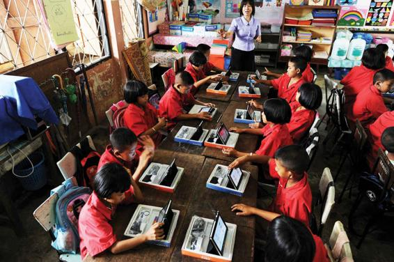

The Impact of the Media and Educational Technology on Everyday Life
While we spend hours a day using technology for fun and for socializing, technology also has shaped where, how, and with whom we learn. The spread of information technology looks set to influence education in several different ways, humans with machines in some types of work. New technologies are already affecting the nature of work, replacing humans with machines in some types of work. The sheer pace of technological change is creating a much more rapid turnover of jobs than once was the case. Education can no longer be regarded as a stage of preparation before an individual enters work. As technology changes, necessary skills change, and even if education is seen from a purely vocational point of view—as providing skills relevant to work—most observers agree that people will need lifelong exposure to education in the future.
Technologies of Education
The rise of education in its modern sense was connected with several other major changes in the nineteenth century. One was the development of the school. One might naïvely think that there was a demand for education and that schools and universities were set up to meet that demand. But that was not how things happened. Schools arose, as Michel Foucault (1975) has shown, as part of the administrative apparatus of the modern state. The hidden curriculum was about discipline and the control of children.
A second influence was the development of printing and the arrival of “book culture.” The mass distribution of books, newspapers, and other printed media was as distinctive a feature of the development of industrial society as were machines and factories. Education developed to provide skills of literacy and computation, giving people access to the world of printed media. Nothing is more characteristic of the school than the schoolbook or textbook.
As in many other areas of contemporary social life, markets and information technology are major influences on educational change. The commercializing and marketizing of education also reflect such pressures. Schools are being reengineered to resemble business corporations. Many of those likely to enter the education field will be organizations whose relation to schooling was previously marginal or nonexistent. These include cable companies, software houses, telecommunication groups, filmmakers, and equipment suppliers. Their influence will not be limited to schools or universities. They are already forming part of what has been called “edutainment”—a sort of parallel education industry linked to the software industry in general and to museums, science parks, and heritage areas.
Education and the Technology Gap
Whether these new technologies will have the radical implications for education that some claim is still an open question. Critics have pointed out that, even if they do have major effects, these technologies may act to reinforce educational inequalities. Information poverty might be added to the material deprivations that currently have such an effect on schooling. The sheer pace of technological change and the demand of employers for computer-literate workers may mean that those who are technologically competent “leapfrog” over people who have little experience with computers.
Some already fear the emergence of a “computer underclass” within Western societies. Although developed countries have the highest levels of computer and Internet usage in the world, there are stark inequalities in computer use within those societies. Many schools and colleges are suffering from underfunding and long-standing neglect; even if these institutions become beneficiaries of schemes that distribute secondhand computer hardware to schools, they must gain the technical expertise and ability to teach information technology skills to pupils. Because the market for computer specialists is so strong, many schools are struggling to attract and keep information-technology teachers, who can earn far greater incomes in the private sector.
Such inequalities came to the fore during the 2020 pandemic, when K-12 schools across the nation were forced to switch to remote learning and the advantages of well-funded public schools became far more obvious. Since many of the students in such schools already resided in households with electronic devices, administrators could afford to provide the small number of needy students with the equipment required to participate in remote learning. But many heavily populated or financially strapped districts could not afford to do so. The public school system in New York City—the epicenter of the pandemic when schools initially transitioned to remote learning—employs 75,000 educators and administrators and accommodates 1 million K-12 students. It was able to supply 175,000 children with laptops, iPads, and Chromebooks but left thousands of others with nothing more than paper packets.
Moreover, access to a device was not necessarily a solution to the problem since 6 to 7 million schoolchildren across the country lived in households with no Internet connection. As all libraries and institutions with public WiFi were on lockdown, such students were incapable of making the switch from live to virtual classroom. For this reason, school districts with large numbers of needy students too poor to afford computers, tablets or broadband service, were forced to resort to other options. In Memphis, Tennessee, for example, where two-thirds of students lacked any type of digital device (including cellphones) and one-third had no Internet access, classes were broadcast over a local TV channel.
Though serious, the technology gap in Western societies seems minor when compared to the digital divide separating Western classrooms from their counterparts in the developing world. As the global economy becomes increasingly knowledge based, there is a real danger that poorer countries will become even more marginalized because of the gap between the information rich and the information poor. Internet access has become a new line of demarcation between the rich and the poor. Information-technology enthusiasts argue that computers need not result in greater national and global inequalities—that their very strength lies in their ability to draw people together and to open up new opportunities. Schools in Asia and Africa that lack textbooks and qualified teachers can benefit from the Internet, it is claimed. Distance-learning programs and collaboration with colleagues overseas could be the key to overcoming poverty and disadvantage. When technology is put in the hands of smart, creative people, they argue, the potential is limitless.
Technology can be breathtaking and can open important doors, but there is no such thing as an easy “techno-fix.” Underdeveloped regions that struggle with mass illiteracy and lack telephone lines and electricity need an improved educational infrastructure before they can truly benefit from distance-learning programs. The Internet cannot be substituted for direct contact between teachers and pupils under these conditions.
Students in a school in the remote Thai highlands use tablets to practice English. While technology is transforming classrooms across the globe, there remains a significant digital divide.
Lifelong Learning
New technologies and the rise of the knowledge economy are transforming traditional ideas about work and education. Training and the attainment of qualifications now occur throughout people’s lives, rather than just early in life. Mid-career professionals are choosing to update their skills through continuing-education programs and online courses. Many employers now allow workers to participate in on-the-job training as a way of enhancing loyalty and improving the company’s skill base.
As our society continues to transform, the traditional beliefs and institutions that underpin it are also undergoing change. The idea of education—implying the structured transmission of knowledge within a formal institution—is giving way to a broader notion of learning that takes place in diverse settings. The shift from education to learning is not an inconsequential one. Learners are active, curious social actors who can derive insights from a multiplicity of sources, not just within an institutional setting. An emphasis on learning acknowledges that skills and knowledge can be gained through all types of encounters—with friends and neighbors, at seminars and museums, in conversations at the local coffee shop, via the Internet and other media, and so forth.
The shift in emphasis toward lifelong learning can already be seen within schools themselves, where there is a growing number of opportunities for pupils to learn outside the confines of the classroom. The boundaries between schools and the outside world are breaking down, not only via cyberspace, but in the physical world as well. “Service learning,” for example, has become a mainstay of many American secondary schools. As part of their graduation requirements, pupils devote a certain amount of time to volunteer work in the community. Partnerships with local businesses have also become commonplace in the United States, fostering interaction and mentor relationships between adult professionals and pupils.
Lifelong learning should and must play a role in the move toward a knowledge society. Not only is learning essential to a well-trained, motivated workforce, but it should also be seen in relation to wider human values. Learning is both a means and an end to the development of a well-rounded and autonomous self-education in the service of self-development and self-understanding. There is nothing utopian in this idea; indeed, it reflects the humanistic ideals of education developed by educational philosophers. An example already in existence is lifelong-learning programs for the age 65+ population, which provide retired people with the opportunity to educate themselves as they choose, developing whatever interests they care to follow.
CONCEPT CHECKS
How do Coleman’s findings differ from the results of Kozol’s research? Whose theory, in your opinion, can better explain race and class gaps in educational achievement?
What effect does tracking have on academic achievement?
Explain two theories that sociologists have developed to account for the ways that cultural and psychological factors affect educational outcomes.
What are the goals of No Child Left Behind and Race to the Top? What are criticisms of these policies?
What are some of the reasons there are high rates of illiteracy in developing nations?